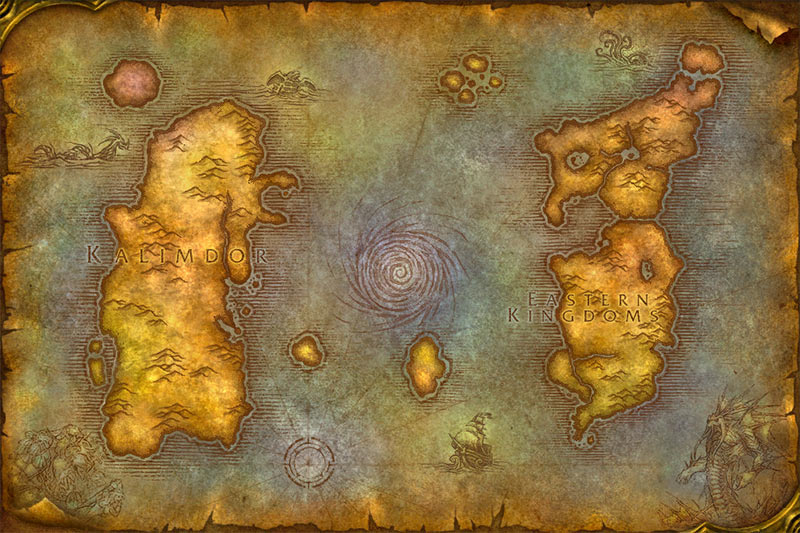

Azeroth
“This is Azeroth. A dangerous, beautiful, magical, and inspiring world. A world filled with discovery, innovation, and wonder. A world worth fighting for. A world worth protecting.”
The world of Azeroth is comprised of 2 major continents, with a number of islands scattered about them. The Great Sea is located in between the two landmasses, and at the center of it is the Maelstrom — a massive chaotic whirlpool and all that remains of the ancient Well of Eternity. The two continents are Kalimdor and Eastern Kingdoms
Eastern Kingdoms
The Eastern Kingdoms (occasionally called Azeroth or the Old World) are the eastern continents on the world of Azeroth. The Eastern Kingdoms is made up from a group of smaller continents (Azeroth, Khaz Modan and Lordaeron). The central part of the Eastern Kingdoms is dominated by the mountains of Khaz Modan and the Redridge Mountains. Both cover several zones. The Eastern Kingdom's western counterpart is the continent of Kalimdor. The Eastern Kingdoms are the homes of the undead, dwarves, gnomes, blood elves, humans and the few remaining high elves.
Unlike Kalimdor, the Eastern Kingdoms have very few desert areas (except for the Badlands), but several areas are wastelands (the Blasted Lands, Burning Steppes, Deadwind Pass, and Searing Gorge). There are areas of marshland like the Swamp of Sorrows and the Wetlands, but temperate forests and hills proliferate. For some reason the mountainous areas surrounding Ironforge appear to be perpetually snowy, while most of the other regions are temperate or warmer.
Kalimdor
Kalimdor [ˈkælɪmdɔɹ] (Titan and Darnassian for land of eternal starlight)[1] is one of the main continents of Azeroth. It is located to the west of the Eastern Kingdoms. The Great Sea lies in between the continents. Kalimdor can be further divided into three major regions (western continents)[2] known as North Kalimdor, Central Kalimdor, and South Kalimdor. Other sources vary on how it is divided. The World of Warcraft Manual divides it into the Northern Kalimdor and Southern Kalimdor regions.
Kalimdor has a huge variety of both animal and plant life. Within this continent, you will find almost every land type; from the ice cold plains of Winterspring in the north, to the hot desert of Tanaris in the south. The mystical woods of Ashenvale, the dry, rocky Thousand Needles, the tropical, lush jungle of Feralas — this continent has it all. To the north the landscape is primarily coated in thick alpine woodland, typical in areas such as Ashenvale. Central Kalimdor, home to the horde, is far more rugged and barren, save for the safety of Mulgore. In the south, desert areas dominate the terrain.